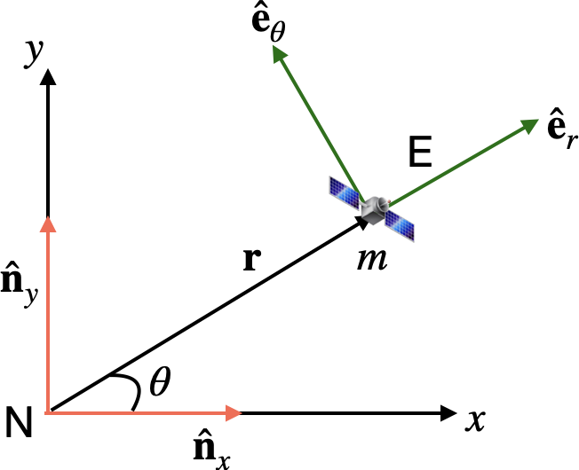

Problem Set 1#
Question 1#

In the figure above, N is an inertial frame comprising right-handed unit vectors \({\bf \hat n}_x\) and \({\bf\hat n}_y\). E is reference frame attached to the satellite comprising \({\bf \hat e}_r\) and \({\bf \hat e}_\theta\); note that \({\bf \hat e}_r\) is directed along \(\bf r\) and \({\bf \hat e}_\theta\) is orthogonal to \({\bf \hat e}_r\). What is the relationship between \({\bf \hat e}_r\) and \({\bf \hat e}_\theta\) and the unit vectors \({\bf \hat n}_x\) and \({\bf\hat n}_y\)? By differentiating these expressions with respect to time, show that: $\( \dot {\bf \hat e}_r = \dot\theta {\bf \hat e}_\theta \)\( and \)\( \dot {\bf \hat e}_\theta = -\dot\theta {\bf \hat e}_r \)$
Solution 1#
From the figure, we can derive the relationship between the unit vectors of frames \(E\) and \(N\) $\( {\bf \hat e}_r = \cos\theta{\bf \hat n}_x + \sin\theta{\bf\hat n}_y\\ {\bf \hat e}_\theta = -\sin\theta{\bf \hat n}_x + \cos\theta{\bf\hat n}_y. \tag{1.1} \)$
Then, taking the derivatives in the inertial frame \(N\), we get $$ \frac{^Nd}{dt}{\bf \hat e}_r = -\dot\theta \bigg( \sin\theta {\bf \hat n}_x + \cos\theta {\bf\hat n}y\bigg)\ \quad \ \frac{^Nd}{dt}{\bf \hat e}\theta = -\dot\theta \bigg(\cos\theta{\bf \hat n}_x + \sin\theta {\bf\hat n}_y\bigg).
\tag{1.2} $$
Using Equation (1.1), we can rewrite Equation \((1.2)\) as $\( \frac{^Nd}{dt}{\bf \hat e}_r = \dot\theta{\bf \hat e}_\theta\\ \frac{^Nd}{dt}{\bf \hat e}_\theta = -\dot\theta{\bf \hat e}_r. \tag{1.3} \)$
Below we demonstrate this with sympy, that you used extensively in EMS418U.
# Your coded answers here (and create more Code cells if you wish to)
from sympy.physics.mechanics import ReferenceFrame, dynamicsymbols
# from sympy.physics.mechanics import init_vprinting
# init_vprinting()
theta = dynamicsymbols('theta')
N = ReferenceFrame('N')
E = ReferenceFrame('E')
E.orient(N, 'Axis', [theta, N.z])
print("E.x is ")
E.x.express(N)
E.x is
print("E.y is ")
E.y.express(N)
E.y is
You should note that, in the above code examples, E.x is analogous to the mathematical symbol of \({\bf \hat e}_r\) and E.y is analogous to the mathematical symbol of \({\bf \hat e}_\theta\). This is just because sympy likes to use indices of .x, .y, and .z for the unit vectors.
Next, we compute the derivatives in the inertial frame using sympy.
ddt_of_e_r = E.x.dt(N)
ddt_of_e_r.express(N)
ddt_of_e_theta = E.y.dt(N)
ddt_of_e_theta.express(N)
Question 2#
The position of a satellite is given by \({\bf r} = r {\bf \hat e}_r\). It’s velocity is given by \({\bf v} = \dot {\bf r}\). Using the results from question 1, show that: $\( {\bf v} = \dot r {\bf \hat e}_r + r \dot\theta {\bf \hat e}_\theta \)$.
The angular momentum per unit mass is given by: \({\bf h} = {\bf r} \times {\bf v}\). Find an expression for the angular momentum of the satellite. Which direction does it point?
Solution 2#
Part 1#
Given that \({\bf r} = r {\bf \hat e}_r\), we also get $\( {\bf v} \triangleq \frac{^Nd}{dt}{\bf r} = \dot r {\bf \hat e}_r + r \frac{^Nd}{dt}{\bf \hat e}_r. \tag{1.4} \)$
From Equation \((1.3)\), we can rewrite the time derivative on the RHS of Equation \((1.4)\) to get $\( {\bf v} = \dot r {\bf \hat e}_r + r \dot \theta{\bf \hat e}_\theta. \tag{1.5} \)$
This can also be achieved with sympy by using unit vectors attached to the frame E in Question 1. We being by creating a variable r that stores the time-varying symbol for the scalar distance \(r\). We then also create two variables for the necessary vectors:
r_vecto represent \(\bf r\); andv_vecto represent \(\bf v\).
This is done below:
# Your coded answers here (and create more Code cells if you wish to)
r = dynamicsymbols('r')
r_vec = r * E.x
v_vec = r_vec.dt(N)
v_vec
Part 2#
From Equations \((1.4)\) and \((1.5)\), we can compute the cross-product that gives us the specific angular momentum as
where \({\bf \hat e}_z\) is a unit vector orthogonal to the plane defined by \({\bf \hat e}_r\) and \({\bf \hat e}_\theta\). Using sympy, we can also check our answer in the following way:
h_vec = r_vec.cross(v_vec)
h_vec
Question 3#
The velocity of a satellite in orbit is given by \({\bf v} = \dot {\bf r}\). Using the results of Question 1, show that the acceleration is $\( (\ddot r - r \dot\theta^2) {\bf e}_r + \frac{1}{r} \frac{d}{dt}(r^2 \dot\theta) {\bf e}_\theta \)$
Solution 2#
Part 1#
We know that acceleration is given by $\( {\bf a} \triangleq \frac{^Nd}{dt}{\bf v} \tag{1.6} \)$
Substituting Equation \((1.5)\) into Equation \((1.6)\), we can rewrite the time derivative on the RHS of Equation \((1.4)\) to get $\( {\bf a} = \ddot r {\bf e}_r + \dot r \frac{^Nd}{dt}{\bf e}_r + \bigg( \dot r \dot \theta + r \ddot \theta\bigg){\bf e}_\theta + r \dot \theta \frac{^Nd}{dt}{\bf e}_\theta. \tag{1.7} \)$
Then, we invoke results from Equation (\(1.3\)) in Equation \((1.8)\) to get: $\( {\bf a} = (\ddot r - r \dot \theta^2){\bf e}_r + \bigg( 2 \dot r \dot \theta + r \ddot \theta\bigg){\bf e}_\theta \tag{1.8} \)$
The last term’s scalar on the RHS can also be rewritten as $\( \bigg( 2 \dot r \dot \theta + r \ddot \theta\bigg) = \frac{1}{r}\frac{d}{dt}({r^2 \dot \theta}) \tag{1.9} \)\( thus allowing Equation \)(1.8)\( to be rewritten as \)\( {\bf a} = (\ddot r - r \dot\theta^2) {\bf e}_r + \frac{1}{r} \frac{d}{dt}(r^2 \dot\theta) {\bf e}_\theta. \tag{1.10} \)$
We can check out work sympy quite easily, which also highlights its computational power (however, this is only fully evident to the student when attempting to derive by hand).
# Your coded answers here (and create more Code cells if you wish to)
a_vec = v_vec.dt(N)
a_vec
Question 4#
The gravitational force acting on an orbiting satellite is given by: $\( {\bf F} = -\frac{\mu m}{r^3}{\bf r} \)\( where \)\mu\( is the gravitational parameter and and \)m\( is the mass of the satellite. Write down the vector equation of motion and then write down its radial (direction \){\bf \hat e}r\() and azimuthal (direction \){\bf \hat e}\theta$) components.
Solution 4#
From Newton’s law, we know that $\( {\bf F} = m\ddot{\bf r}. \tag{1.11} \)\( Subsitituing for \)\bf F\( from the problem satatement, we write the above Equation as \)\( -\frac{\mu m}{r^3}{\bf r} = m\ddot{\bf r}. \tag{1.12} \)\( Rewriting \){\bf r}\( and \)\ddot{\bf r}\( in their component form along \){\bf \hat e}r\( and \){\bf \hat e}\theta\(, we reach the following two scalar equations \)\( -\frac{\mu}{r^2} = (\ddot r - r \dot\theta^2) \tag{1.13} \)$
In the case of sympy, we begin by create F to store the value of \(\bf F\); this makes use of new symbols for \(\mu\) and \(m\) as well as the pre-created variable vector r_vec that represents the \(\bf r\).
from sympy import symbols
mu, m = symbols('mu m')
F = - mu * m /r**3 * r_vec
Then, we rewrite the vector equation (1.11) as $\( {\bf F} - m\ddot{\bf r} = 0 \tag{1.15} \)$ and then ask the computer evalaute LHS terms by the following
LHS_of_Equation_115 = F - m*a_vec
We can then take the dot products along \({\bf \hat e}_r\) and \({\bf \hat e}_\theta\) to get two scalar equations that are identical to Equations \((1.13)\) and \((1.14)\), when they are both equated to zero.
LHS_of_Equation_115.dot(E.x) # this is the scalar equation along radial direction
LHS_of_Equation_115.dot(E.y)